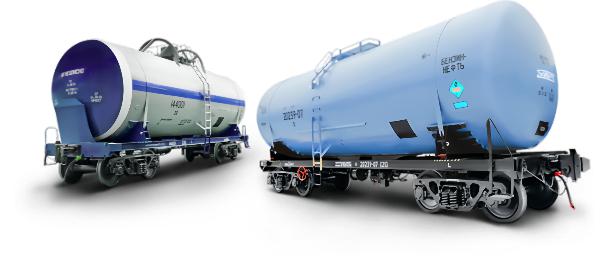

ООО «Сибирь»
Пункт промывки и пропарки железнодорожных цистерн

Полное соответствие ГОСТ 1510-2022
Подготовка цистерн из-под светлых и темных нефтепродуктов под налив и в ремонт
Выдача сертификатов ВУ-19, ВУ-20
Основные этапы пропарки-промывки железнодорожных цистерн
Работы по подготовке железнодорожных цистерн к наливу и ремонту включают очистку внутренних поверхностей котлов цистерн от остатков ранее перевозимого нефтегруза.#3 После промывки, пропарки внутренняя поверхность котла цистерны дополнительно протирается ветошью в соотвествии с требованием ГОСТ 1510-2022.
#4 При подготовке жд цистерн под налив нефтепродуктами производится устранение коммерческих браков.
#1 Цистерны из-под светлых нефтепродуктов промываются горячим моющим раствором температурой до 90 градусов.
#2 Цистерны из-под темных нефтепродуктов обрабатываются паром с температурой 115 градусов.
#5 Выдача акта о годности железнодорожных цистерн под налив, при подготовке цистерны в ремонт — выдача акта о проверке на взрывобезопасность газовоздушной среды.
О компании
Компания ООО «Сибирь» оказывает услуги по пропарке, промывке железнодорожных цистерн согласно ГОСТ 1510-2022.
У нас большой опыт работы, имеем умеренные цены и гарантию.
Штатный персонал позволяет выполнить работу в приемлемые сроки.

Или пишите
sibir@list.ru
Новосибирская обл.
ст. Болотная Зап-Сиб ж. д.ОГРН: 1146733017650ИНН: 6732078775
ст. Болотная Зап-Сиб ж. д.ОГРН: 1146733017650ИНН: 6732078775
sibir@list.ru© ООО «Сибирь» — 2024